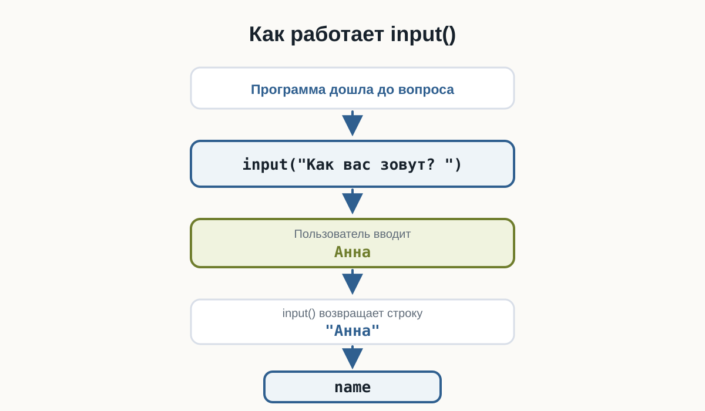
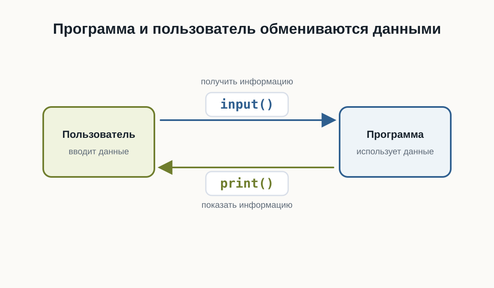
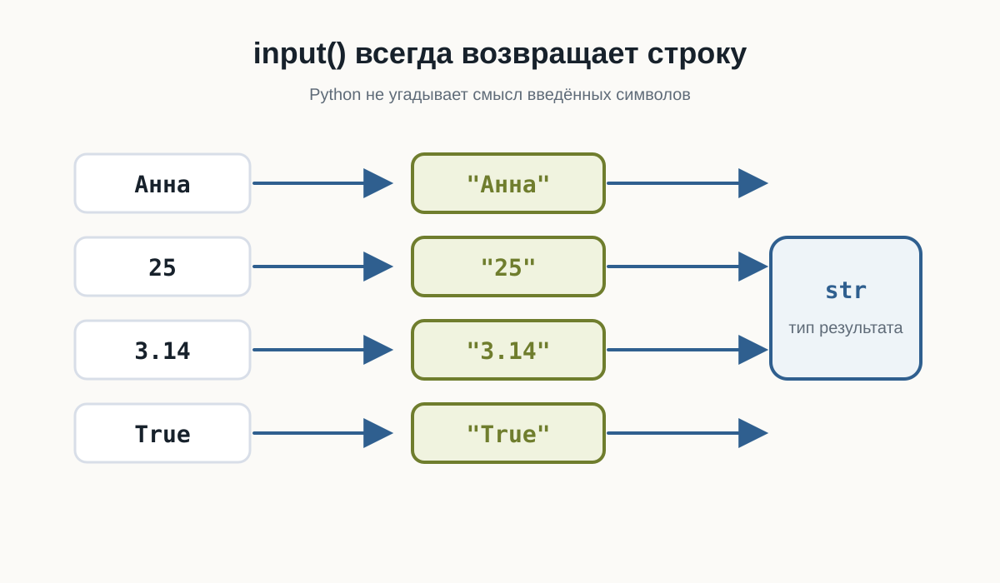
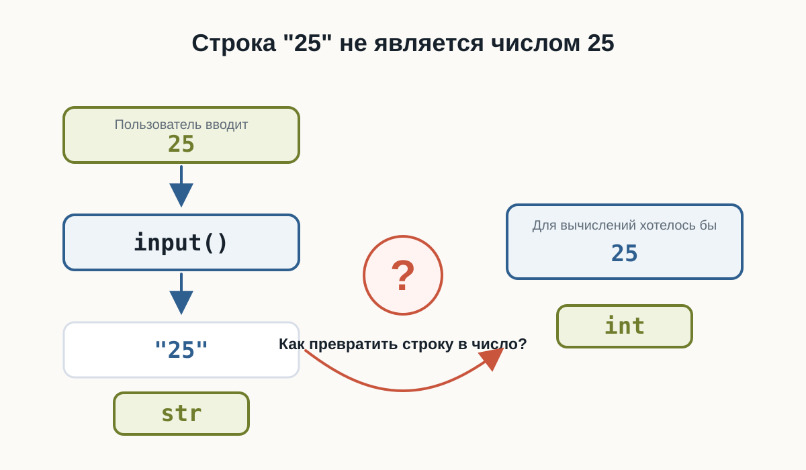

3.3 Ввод данных
Главный вопрос главы:
Как программа получает данные от пользователя?
До сих пор наши программы работали только с данными, которые мы заранее записывали в коде.
Например:
name = "Анна"
age = 25
print(name)
print(age)Такая программа всегда использует одни и те же значения.
Но реальные программы часто должны взаимодействовать с человеком.
Например:
- спросить имя;
- получить возраст;
- узнать город;
- попросить ввести поисковый запрос;
- получить ответ на вопрос.
Для этого программе нужен способ получать данные во время выполнения.
В Python для этого есть функция input().
Первая интерактивная программа
Создадим программу:
После запуска программа остановится и будет ждать ввода.
В терминале появится:
Как вас зовут?Если пользователь введёт:
Аннапрограмма продолжит работу:
Привет, АннаТеперь результат зависит не только от кода.
Он зависит ещё и от данных, которые ввёл пользователь.
Это наша первая по-настоящему интерактивная программа.
Как работает input()
Рассмотрим строку:
name = input("Как вас зовут? ")Здесь происходит несколько действий.
Сначала Python выполняет:
input("Как вас зовут? ")Функция показывает текст:
Как вас зовут?и ждёт ответа пользователя.
Пользователь вводит, например:
АннаПосле этого input() возвращает введённое значение.
Получается примерно такая последовательность:
Программа задаёт вопрос
↓
Пользователь вводит данные
↓
input() получает данные
↓
Возвращает значение
↓
Значение сохраняется в переменнойВ нашем случае:
name = input("Как вас зовут? ")после ввода можно мысленно представить как:
name = "Анна"
Текст внутри input()
Текст:
"Как вас зовут? "называется приглашением ко вводу.
Он объясняет пользователю, какие данные ожидает программа.
Например:
city = input("В каком городе вы живёте? ")или:
language = input("Какой язык программирования вы изучаете? ")Без приглашения тоже можно написать:
name = input()Программа будет работать.
Но пользователь не поймёт, что именно нужно вводить.
Поэтому приглашение обычно делает программу понятнее.
Значение нужно сохранить
Результат input() можно сохранить в переменной:
name = input("Введите имя: ")Теперь введённое значение связано с именем:
nameи его можно использовать дальше:
print("Привет,", name)Например, пользователь вводит:
Максими программа выводит:
Привет, МаксимПеременная позволяет использовать полученные данные столько раз, сколько потребуется.
name = input("Введите имя: ")
print("Привет,", name)
print("Рад познакомиться,", name)Попробуйте сами
Создайте файл:
greeting.pyНапишите:
name = input("Как вас зовут? ")
print("Привет,", name)Запустите программу несколько раз и каждый раз вводите другое имя.
Посмотрите, как меняется результат.
Затем измените приветствие самостоятельно.
Программа может задавать несколько вопросов
input() можно использовать несколько раз.
Например:
Программа сначала остановится на первом input().
После ответа перейдёт ко второму.
Пример работы:
Как вас зовут? Анна
Где вы живёте? Казань
Имя: Анна
Город: КазаньИнструкции по-прежнему выполняются сверху вниз.
Если программа встретила input(), она ждёт пользователя и только после ввода продолжает выполнение.
input() возвращает значение
В предыдущих главах мы уже использовали функции.
Например:
print("Привет")Но между print() и input() есть важное различие.
print() показывает данные пользователю.
программа → пользовательА input() получает данные от пользователя.
пользователь → программаМожно представить их как два направления взаимодействия:
print()
Программа ───────────→ Пользователь
Программа ←─────────── Пользователь
input()Это две базовые операции общения программы с человеком:
- вывести информацию;
- получить информацию.

Какой тип возвращает input()
Теперь вспомним предыдущую главу.
Мы знаем, что каждое значение Python имеет тип.
Попробуем проверить результат input():
name = input("Введите имя: ")
print(type(name))Если пользователь введёт:
Аннаполучим:
<class 'str'>Это ожидаемо.
Имя — текст.
Но теперь попробуем другое.
age = input("Сколько вам лет? ")
print(type(age))Введите:
25Результат:
<class 'str'>Это уже интереснее.
Мы ввели число:
25но Python получил значение типа:
strinput() всегда возвращает строку
Это одно из главных правил этой главы:
input()всегда возвращает строку.
Неважно, что ввёл пользователь.
Если он введёт:
Аннаполучим строку.
Если введёт:
25тоже получим строку.
Если введёт:
3.14снова получим строку.
Условно:
Пользователь вводит Python получает
Анна "Анна"
25 "25"
3.14 "3.14"
True "True"Все эти значения имеют тип:
str
Почему Python делает именно так
Когда пользователь печатает символы на клавиатуре, Python не пытается угадывать их смысл.
Например:
007Что это?
Число семь?
Код пользователя?
Часть номера телефона?
Текстовый идентификатор?
Python не знает.
Поэтому input() использует простое и предсказуемое правило:
Всё, что ввёл пользователь, сначала считается текстом.
А уже программист решает, что с этими данными делать дальше.
Проверим разные значения
Создадим программу:
Запустите её несколько раз.
Введите:
Pythonзатем:
42затем:
3.14затем:
TrueВо всех случаях type() покажет:
<class 'str'>До запуска программы попробуйте предположить тип результата.
Введите по очереди:
100
-5
0
3.14
False
None
PythonПосле каждого запуска проверяйте результат type().
Что общего у всех результатов?
Строка "25" — не число 25
В предыдущей главе мы уже встречали:
25и:
"25"Первое значение имеет тип:
intВторое:
strПосле:
age = input("Сколько вам лет? ")если пользователь введёт:
25в переменной age окажется не число:
25а строка:
"25"На экране они выглядят одинаково.
Но для Python это разные значения.
Почему это важно
Пока мы просто выводим полученное значение, проблемы нет:
age = input("Сколько вам лет? ")
print("Ваш возраст:", age)Это работает.
Но попробуем выполнить вычисление.
Предположим, пользователь ввёл:
25Можно ожидать:
26Но программа завершится ошибкой.
Почему?
Потому что фактически Python пытается выполнить:
"25" + 1Слева находится:
strсправа:
intЭти типы нельзя таким образом сложить.
Ошибка снова помогает нам
Мы можем увидеть ошибку:
TypeErrorМы уже встречали её в предыдущей главе.
Теперь становится понятно, почему она особенно важна при работе с пользовательским вводом.
Пользователь вводит:
25но программа получает:
"25"Если нам действительно нужно число, строку придётся сначала превратить в число.
Но этим мы займёмся в следующей главе.
Не спешите исправлять пример
Возможно, вы уже знаете, что можно написать что-то вроде:
int(...)Пока не будем этого делать.
Сейчас важно хорошо понять саму проблему.
Рассмотрим:
age = input("Сколько вам лет? ")После ввода 25:
age → "25" → strА для арифметики нам нужно:
age → 25 → intМежду этими двумя состояниями должно произойти преобразование данных.
Именно этому будет посвящена следующая глава.

Ввод и вывод вместе
Теперь мы можем написать небольшую программу, которая действительно взаимодействует с пользователем.
Пример выполнения:
Как вас зовут? Анна
Ваш город? Казань
Ваша профессия? Разработчик
Какой язык вы изучаете? Python
Профиль
Имя: Анна
Город: Казань
Профессия: Разработчик
Изучает: PythonОбратите внимание:
сама программа одна и та же.
Но результат может быть разным при каждом запуске.
Именно ввод данных делает программу интерактивной.
Практика: небольшая анкета
Создайте файл:
profile.pyПрограмма должна спросить:
- имя;
- город;
- профессию;
- язык программирования, который изучает пользователь.
После этого вывести небольшой профиль.
Например:
Как вас зовут? Алексей
Ваш город? Москва
Ваша профессия? Дизайнер
Какой язык вы изучаете? Python
Профиль
Имя: Алексей
Город: Москва
Профессия: Дизайнер
Изучает: PythonНе копируйте готовый результат буквально.
Попробуйте самостоятельно придумать:
- тексты вопросов;
- названия переменных;
- формат результата.
Практика: предскажите результат
Рассмотрите программу:
value = input("Введите значение: ")
print(value)
print(type(value))Пользователь вводит:
100Что выведет:
type(value)Выберите ответ:
int
float
str
boolПравильный ответ:
strinput() всегда возвращает строку.
Поэтому введённое 100 внутри программы становится:
"100"Практика: найдите проблему
Что произойдёт здесь?
year = input("Введите текущий год: ")
print(year + 1)Предположим, пользователь вводит:
2026Подумайте:
- какого типа будет
year; - выполнится ли
year + 1; - если нет — почему.
year будет иметь тип:
strФактически программа попытается выполнить:
"2026" + 1Python не может сложить str и int, поэтому возникнет:
TypeErrorЧтобы выполнить арифметику, сначала потребуется преобразовать введённую строку в число.
Практика: что хранится в переменных
Рассмотрите:
first_name = input("Имя: ")
age = input("Возраст: ")
height = input("Рост: ")Пользователь вводит:
Анна
25
1.68Определите тип:
first_name
age
heightдо запуска программы.
Все три значения имеют тип:
strПолучается:
first_name → "Анна" → str
age → "25" → str
height → "1.68" → strinput() не пытается определить, является введённый текст числом.
Задача: персональное приветствие
Напишите программу, которая спрашивает:
Имя
Городи выводит сообщение примерно такого вида:
Привет, Анна!
Казань — отличный город.Попробуйте решить задачу самостоятельно.
Один из вариантов:
name = input("Как вас зовут? ")
city = input("В каком городе вы живёте? ")
print("Привет,", name)
print(city, "— отличный город.")Это не единственное правильное решение.
Текст сообщений и имена переменных могут отличаться.
Задача: мини-интервью
Напишите программу, которая задаёт пользователю минимум четыре вопроса.
Например:
- имя;
- профессия;
- любимая технология;
- цель обучения.
После ввода программа должна вывести все ответы в удобном виде.
Сначала попробуйте решить задачу самостоятельно.
Например:
name = input("Как вас зовут? ")
profession = input("Ваша профессия? ")
technology = input("Любимая технология? ")
goal = input("Что вы хотите изучить? ")
print()
print("Мини-интервью")
print("Имя:", name)
print("Профессия:", profession)
print("Любимая технология:", technology)
print("Цель:", goal)Ваша программа может выглядеть иначе.
Главное — самостоятельно использовать несколько вызовов input() и сохранить полученные значения в переменных.
Задача со звёздочкой
Пользователь вводит:
10Программа:
Какой результат появится?
Подумайте до запуска.
Результат:
1010Почему?
После input() значение имеет вид:
"10"Поэтому Python выполняет:
"10" + "10"Для строк оператор + означает объединение:
"10" + "10" → "1010"Это ещё раз показывает, почему тип данных имеет значение.
Что важно запомнить
input() позволяет программе получать данные от пользователя.
Например:
name = input("Введите имя: ")Основная схема выглядит так:
Пользователь
↓
вводит данные
↓
input()
↓
возвращает строку
↓
переменная
↓
программа использует значениеГлавные правила этой главы:
input()останавливает программу и ждёт пользователя.- Текст внутри
input()объясняет, что нужно ввести. - Результат
input()можно сохранить в переменной. input()всегда возвращаетstr.- Даже введённые числа сначала становятся строками.
- Поэтому перед вычислениями иногда понадобится изменить тип данных.
И самое важное:
Ввод данных превращает программу из заранее заданной последовательности действий в программу, которая может реагировать на пользователя.
Что дальше?
Теперь наша программа умеет получать данные.
Но появилась новая проблема.
Пользователь вводит:
25а Python получает:
"25"Что делать, если нам действительно нужно число?
Следующий главный вопрос:
Как превратить значение одного типа в значение другого типа?
Этому посвящена следующая глава:
«Преобразование типов».